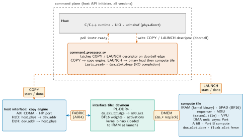

mininpu: Data Movement: End-to-End Integration¶
How bytes travel from the host to the compute datapath and back, told as a single worked forward-pass step for a GPT-2 BF16 layer. The four units (host interface, interface tile, command processor, compute tile) and the four named inter-unit interfaces (COPY, LAUNCH, DMEM, FABRIC) are defined in docs/charter.md §3; per-unit mechanics are covered in the individual unit docs. This document is the integration map, not the mechanics reference.
End-to-end dataflow¶
Slide summary (from the deck build)
- COPY (CP ↔ host interface): H2D fills devmem with BF16 weights, activations, and the kernel binary; D2H returns results.
- LAUNCH (CP ↔ compute tile): CP loads
devmem[kbin_addr, kbin_size]into IRAM, then pulsescompute_start. - DMEM (compute tile ↔ interface tile): the DMA unit streams devmem ↔ SPAD; async slot lets Port A fill while Port B computes.
- FABRIC (host interface ↔ interface tile): AXI4 bulk data path between the copy engine and PL-DDR4.
Figure: dm-flow

End-to-end dataflow for one GPT-2 BF16 forward-pass step. The four units are the host, the command processor (command_processor.sv), the host interface / copy engine, the interface tile / devmem (PL-DDR4), and the compute tile (IRAM + SPAD + MXU/VPU). The four named inter-unit interfaces are COPY (CP ↔ copy engine), LAUNCH (CP ↔ compute tile), FABRIC (copy engine ↔ interface tile, AXI4), and DMEM (compute tile ↔ interface tile, dm_* req/ack). The step-by-step walkthrough follows.
The diagram locates all five data-movement steps in the four-unit picture. Steps 1 and 5 are COPY + FABRIC (host ↔ devmem); step 2 is LAUNCH (which includes a binary-load sub-step over DMEM); steps 3 and 4 are DMEM (devmem ↔ SPAD) and in-SPAD compute.
Five-step walkthrough¶
Slide summary (from the deck build)
- H2D copy. Host writes COPY descriptors {
host_phys,dev_addr,len,dir=H2D} and rings the doorbell. CP routes each to the copy engine (COPY interface); the copy engine DMAs PS-DDR → PL-DDR4 over FABRIC (HP port + MIG). Transfers: BF16 weight matrix, BF16 activation vector, kernel binary. Host pollsinstr_readyafter each transfer. - Kernel launch. Host writes a LAUNCH descriptor {
kbin_addr:64,kbin_size:32} and rings the doorbell. CP loadsdevmem[kbin_addr, kbin_size]into tile IRAM via DMEM (binary-load mini-DMA), then pulsescompute_start. Entry point is IRAM[0]; v1 has no runtime kernargs (addresses are compile-baked). - DMA loads: devmem → SPAD. The sequencer executes
dmu.load.spminstructions; the DMA unit assertsdm_enon the DMEM interface. The interface tile'sdm_axi_bridgeissues AXI4 INCR bursts onm00_axi(PL-DDR4) and fills SPAD Port A. With the async flag, Port A fills while the sequencer computes on Port B (double-buffer ping-pong; see compute_tile doc).dma_slot_done[slot]signals completion;flush.slotfences. - MXU/VPU compute. With data in SPAD, the sequencer dispatches
mxu.load.w+mxu.matmulto the MXU (weight-stationary 8×8 systolic) and VPU ops (vpu.rowmax,vpu.exp2,vpu.scale.bcast,vpu.gelu, …) for LayerNorm, attention softmax, and feed-forward on SPAD / ACC. BF16 storage throughout; FP32 accumulation. - Store + D2H copy.
dmu.store.spminstructions write BF16 results SPAD → devmem over DMEM. Onhalt,instr_readyasserts. The host then issues a COPY descriptor withdir=D2H; the copy engine DMAs devmem → host buffer over FABRIC. The result is available in the udmabuf region.
Step 1 --- H2D copy. The host allocates udmabuf regions and copies BF16 weights, the BF16 activation vector, and the kernel binary into them. It then writes COPY descriptors {host_phys:64, dev_addr:32, len:32, dir=H2D} to the CMD window and rings the self-clearing doorbell (slv_reg0[4]). The CP latches each descriptor on the doorbell edge and routes it to the copy engine via the COPY interface (start/done). The copy engine (AXI CDMA) DMAs PS-DDR → PL-DDR4 directly over FABRIC (HP port + MIG); Linux is not in the transfer loop. The host polls instr_ready between transfers. Full COPY descriptor layout and CMD-window register map: control_plane.
Step 2 --- Kernel launch. The host writes a LAUNCH descriptor {kbin_addr:64, kbin_size:32} and rings the doorbell. The CP loads devmem[kbin_addr, kbin_size] into the compute tile's IRAM via a binary-load mini-DMA over the DMEM interface (new RTL), then pulses compute_start; done = instr_ready. The sequencer begins executing from IRAM[0]. v1 operand addresses are compile-baked as immediates (adjusted by the D4 patch table and pool_base). No runtime kernargs in v1. Details: control_plane.
Step 3 --- DMA loads: devmem to SPAD. Inside the kernel, dmu.load.spm instructions (with the async flag) cause the DMA unit to assert dm_en on the DMEM interface. The interface tile's dm_axi_bridge issues AXI4 INCR bursts on m00_axi and fills SPAD Port A. With the async flag, Port A fills concurrently while the sequencer computes on Port B (the double-buffer ping-pong pattern). Completion is signalled by dma_slot_done[slot]; flush.slot provides the fence. The DMA unit lives in the compute tile; the interface tile is devmem-only (no buffer logic). DMEM protocol and async slot mechanics: interface_tile and compute_tile.
Step 4 --- MXU/VPU compute. With operands in SPAD, the sequencer dispatches the per-layer compute sequence: mxu.load.w then mxu.matmul to the MXU (8×8 weight-stationary systolic array; the load/compute split lets the next weight tile preload while the current tile computes); VPU ops for LayerNorm (vpu.rsqrt, vpu.fma.imm, vpu.scale.col.bcast), attention softmax (vpu.rowmax, vpu.sub.bcast, vpu.scale.imm, vpu.exp2, vpu.rowsum, vpu.div.bcast), and feed-forward GELU (vpu.gelu). BF16 storage throughout; ACC is always FP32. Register load/store ops (acc.store, acc.load) bridge between BF16 SPAD and the FP32 ACC register file at layer boundaries. ISA details: mininpu/isa and mxu, vpu.
Step 5 --- Store and D2H copy. dmu.store.spm instructions write BF16 results from SPAD back to devmem over DMEM. When halt executes, instr_ready asserts. The host then issues a COPY descriptor with dir=D2H; the copy engine DMAs devmem → the udmabuf host buffer over FABRIC. The result is available in host memory for the next layer's H2D or for the final logit read.
Per-unit detail¶
Table: per-unit mechanics reference: interface names, owning units, and SSOT files.
| Interface / unit | Detail in |
|---|---|
COPY descriptor layout, CMD window, doorbell, instr_ready |
control_plane (command_processor.sv) |
| FABRIC path: copy engine, AXI CDMA, HP port, udmabuf | host_interface |
DMEM protocol: dm_axi_bridge, AXI4 burst, dm_en/dm_ack |
interface_tile |
Async DMA: dma_slot_done, flush.slot, Port A/B ping-pong |
compute_tile |
MXU systolic array (mxu.load.w + mxu.matmul) |
mxu |
| VPU pipeline (LayerNorm, softmax, GELU, register load/store) | vpu |
| ISA opcodes, encodings, operand fields | mininpu/isa (SSOT) |
| ABI register map, COPY/LAUNCH field widths | mininpu/abi.py (SSOT) |
Memory sizes (devmem, IRAM, SPAD), bus widths |
npu/src/npu/npu_config_pkg.sv |
Numbers owned by code (mininpu/isa, abi.py, npu_config_pkg.sv) are cited above; they are not restated in this integration doc.
Versioning note. The host-to-CP interface (write-only CMD window, self-clearing doorbell, instr_ready polling) is invariant across v1/v2/v3. What changes across versions: v1 = single tile, sequential (host-mediated depth-1); v2 = copy engine running concurrently with the compute tile (chip-level concurrency, real command ring, multiple-outstanding + per-command completion); v3 = multi-tile with a work distributor. See docs/charter.md §§4--5, 10.